How To Play
If you're new to the Among Us universe, you've come to the right place! Here we'll show you how to get started, how to play as a Crewmate/Imposter and Map Tips & Tricks.
Even if you're an experienced player you may learn some things you didn't know!
Getting Started
Before you start playing you need to do a couple of things before you can hop into your first lobby!
Here is the Main Menu screen of Among Us! Here you can choose what you want to play!
- Local: Picking Local allows you to play with nearby friends or family members that are connected to the same LAN connection as you. Think of it as a private game for within the house.
- How To Play: Among Us has its own guide for you to get yourself started, so if you need anymore help while in game you can refer to that guide (but of course we have more information here).
- FreePlay: If you ever want to just run about the maps and get to know them a bit more with AI crewmates you can do that peacefully in Freeplay!
- Online: Here is where you'll find the thousands of games hosted by other players around the world who have the same server selected as you. You could also host your own game publically or for your friends.
- Bar of Options: (From left to right) Here you can find the in-game announcements from the Among Us Dev Team; In-game settings; Hyperlink to the InnerSloth Website; Your In-game Statistics; Hyperlink to buy in game cosmetics dependant if on Steam or Mobile.
Hosting Games, Public Games and Private Games
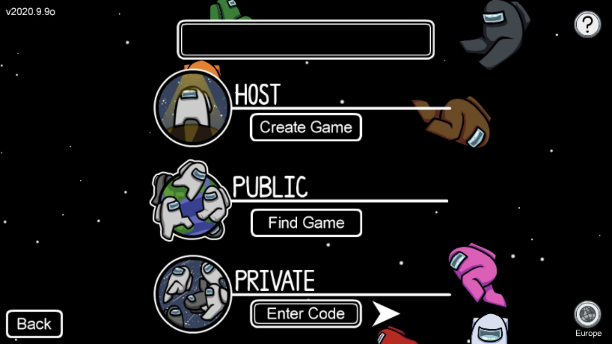Here is the menu for Online Play, where you have a few options of how you want to play Among Us.
- Nickname (Important): Before you are allowed to enter any public or private game you must assign yourself a nickname.
- Public Game: Here is where you'll find many public games hosted by other players on the same server as you. If you want to have a quick game, public is where you can do that!
- Host Game: This is where you can host your own game either publically or privately with friends.
- Private Game: If you're playing privately with friends, your friends will give you a code which you enter here to join!
Jumping into a game
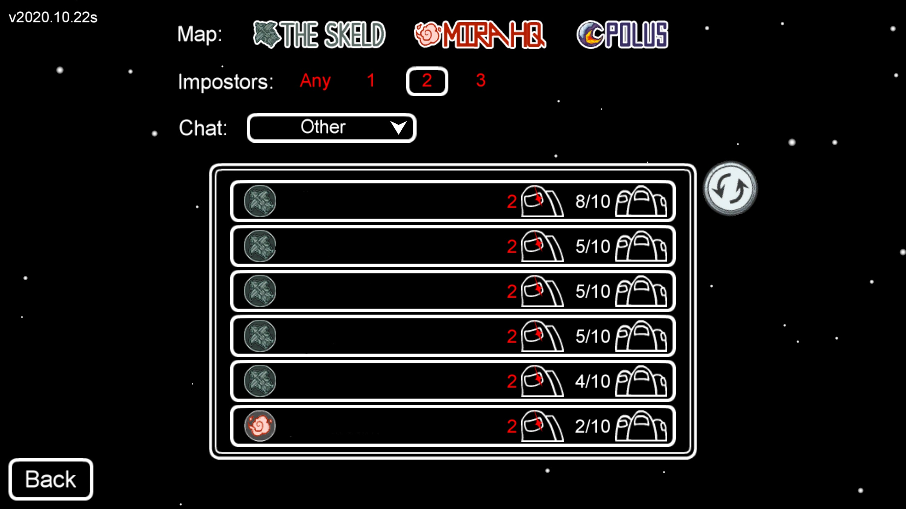Here is the public game menu. This is where you can jump into Among Us with other players.
- Game Filter: You may want to only look for games on specific maps or games with only 2 Imposters. This is where you can filter the games that appear on the public games list to cater for what you want to play.
- Game List: Here is where you'll find a random list of public games hosted by other players on the server you are currently connected to. You can see the map that has been selected by the host and the amount of Imposters you'll face.
Pre-Game Lobby

Whether you're joining a public lobby or hosting one for your friends, all Crewmates will meet in the pre-game lobby before the match starts.
Take a minute to say hi to everyone!
- If you want to host a game for your friends or publically for anyone, head over to the computer. This is where you can customise the in game settings to give your game an extra funk to it! Test it as much as you want!
Maps
Now let's explain the Maps of the game!
The Skeld
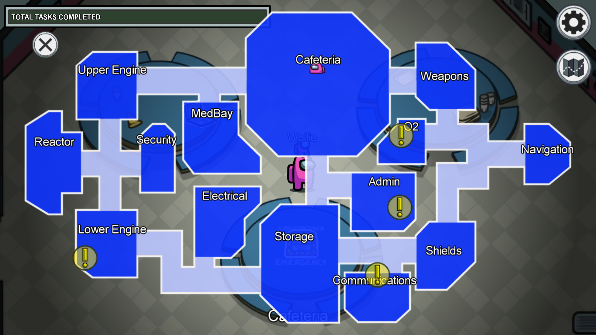 Set in the spaceship of the Crewmates, the group is currently on their way to their next destination.
However, before they get there they must make sure the ship makes it there safely.
Tasks on The Skeld:
- Fix Wires
- Trash Shoot
- Download and Upload Data
- Submit Scan
- Inspect Sample
- Divert and Accept Power
- Start Reactor
- Unlock Manifolds
- Calibrate Distributor
- Refuel Engines
- Align Engine Output
- Admin Card Swipe
- Clear O2 Filter
- Prime Sheilds
- Clear Astroids
- Chart Course
- Stabilize Steering
Polus
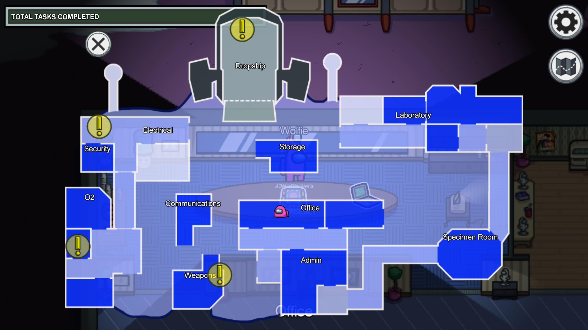 Set on a remote planet within our universe, the Crewmates are testing to see if this planet hosts anything valuable for our beautiful planet earth.
Make sure the base is at full working order!
Tasks on Polus:
- Insert Keys
- Refuel Engines
- Align Telescope
- Chart Course
- Clear Asteroids
- Empty Garbage
- Fill Canisters
- Fix Weather Node
- Fix Wires
- Inspect Sample
- Monitor Tree
- Open Waterways
- Reboot Wifi
- Record Temperature
- Repair Drill
- Replace Water Jug
- Scan Boarding Pass
- Start Reactor
- Store Artifacts
- Submit Scan
- Admin Card Swipe
- Unlock Manifolds
- Download and Upload Data
Mira HQ
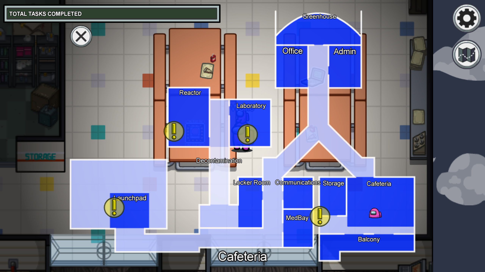 Set on planet earth, Mira HQ is the HeadQuarters of our favourite Crewmates.
The Crewmates need to make sure everything is in working order before the next adventure!
Tasks on Mira HQ:
- Fix Wires
- Empty Garbage
- Prime Shields
- Chart Course
- ID Code
- Clear Asteroids
- Measure Weather
- Buy Beverage
- Clean O2 Filter
- Assemble Artifact
- Sort Samples
- Refuel Engines
- Run Diagnostics
- Submit Scan
- Process Data (Only Upload)
- Start Reactor
- Unlock Manifolds
- Divert Power
- Water Plants
Security Cameras
Security Cameras are very useful in helping you catch Imposters. Cameras allow you to watch certain parts of the map while in another room, and if you're lucky, you'll find an Imposter trying to cause trouble. Camera locations are highlighted in blue.
Note: Mira HQ doesn't have Security Cameras
Crewmate
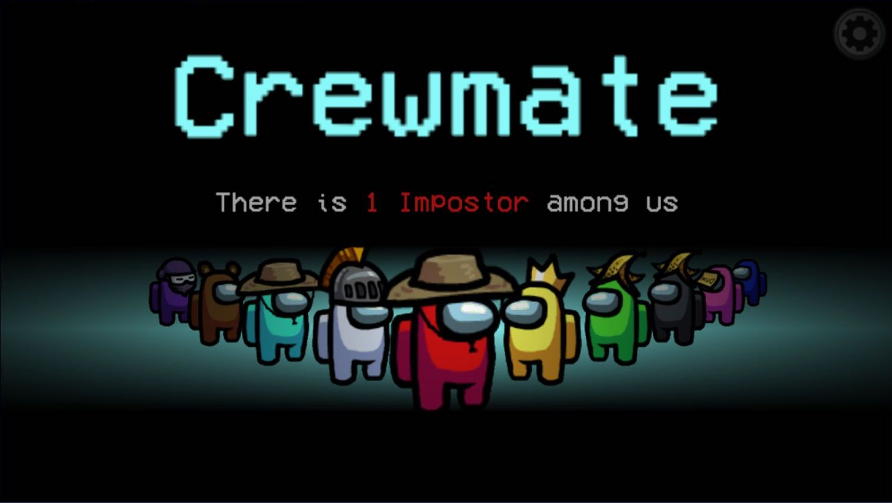 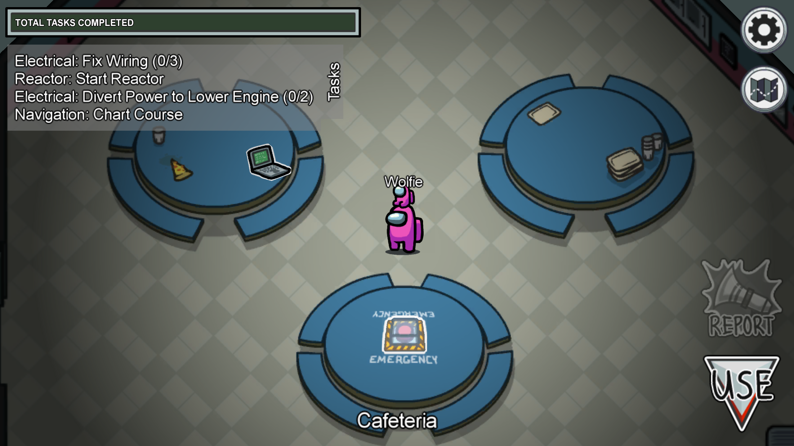Welcome Crewmates! Now that we're in a game, let's explain everything you need to keep an eye out for.
- Task Bar: This bar keeps track of how many objectives have been complete. Fill the bar to win!
- Objectives: These are your personal tasks. Look at the map to find out where these tasks are located.
- Report: If you find a body, report it to your fellow Crewmates to begin the voting process.
Crewmates have to complete one of the following in order to win:
- Complete All Tasks
- Vote Off The Imposters
Sabotage (Crewmate)
The Imposters will periodically sabotage the Crewmates to gain an advantage!
The ways Imposters can sabotage are:
- Lights: When sabotaged, the vision radius of every crewmate in the game will decrease until it's a minimum. Head over to electrical and flick the switches back to green to turn on the lights!
- Communications: When sabotaged, the objective bar will hide your personal tasks (you can still do them), but you will not know what they are. Fix the radio in Communications to get your tasks back! (Note: Cameras will be disabled during the sabotage).
- Reactor: When sabotaged, Crewmates have 30 seconds to stabilise the reactor, otherwise it will be an automatic lose. Two Crewmates are required to fix reactor: both Crewmates must place their hand on the touch pads at the same time to stabilise the reactor.
- O2 (Excluding Polus): When sabotaged, Crewmates have 30 seconds to restore the oxygen supply, otherwise it'll be an automatic lose. Two keypads will highlight on the map. Both require one Crewmate to input the codes shown on the notepad at the bottom-left of the keypads to fix the oxygen supply.
The Voting Process (Crewmate)
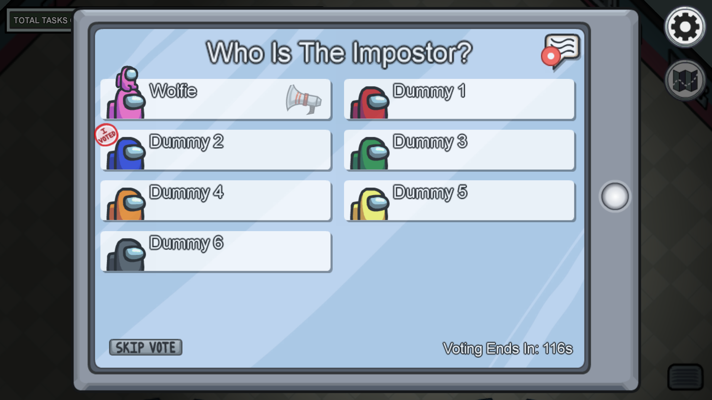 A body has been discovered! Who do you think is the Imposter?
Discuss with your fellow Crewmates and vote off that Imposter!
Once everyone has voted or the timer has reached zero, the Crewmate with the most votes will be ejected to the vacuum of space!
Playing as a Crewmate (Ghost)
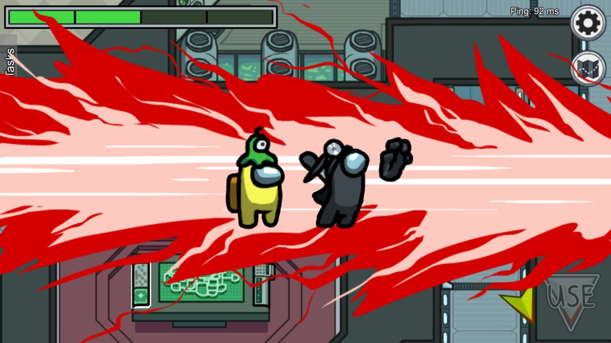 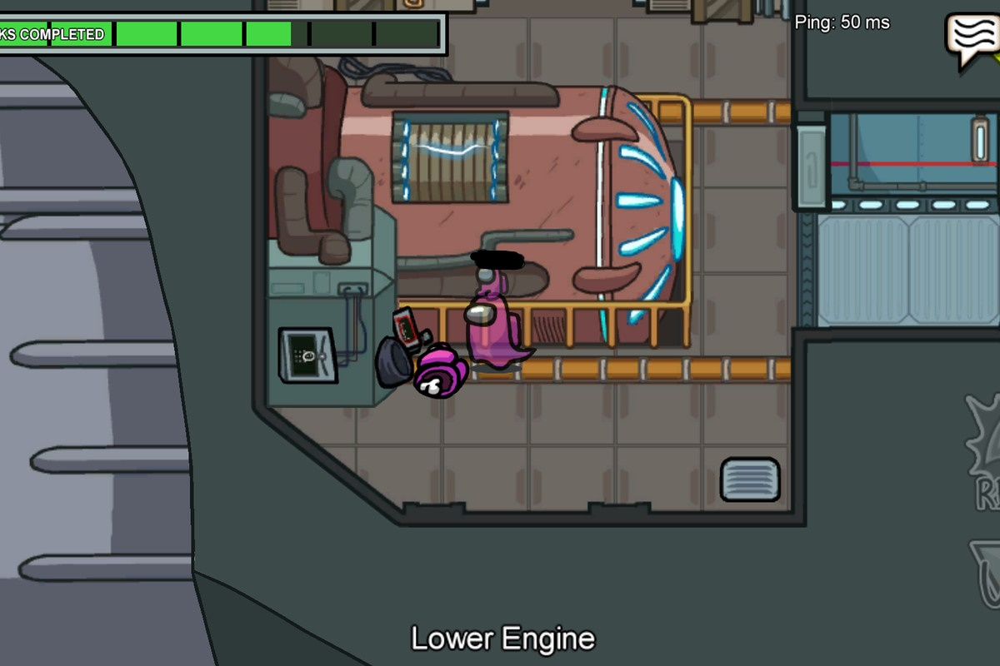 Not all hope is lost after you are killed or ejected! You can still help your team win!
You can still complete your tasks while you're dead, but you must remain silent the entire time!
Crewmate Victory Screen
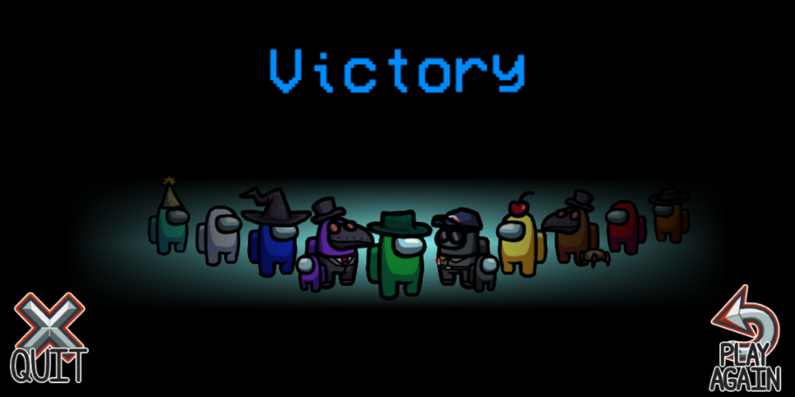If the Crewmates successfully detect the Imposters or complete all tasks, the Crewmates will win.
Crewmate Lose Screen
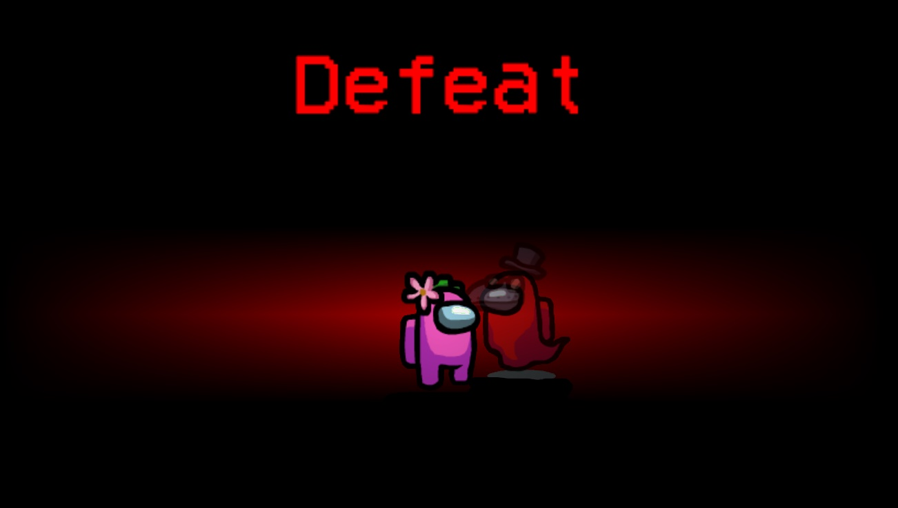If the Imposters get rid of all the Crewmates, the Crewmates will lose. In addition, if the number of Crewmates equals the number of Imposters, the Crewmates will automatically lose.
Imposter
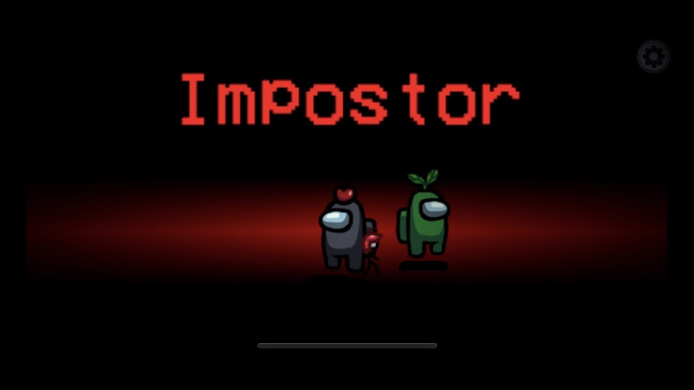Welcome Imposters! Now that we're in the game, let's explain what you should keep an eye out for to give you an advanatage over the other Crewmates.
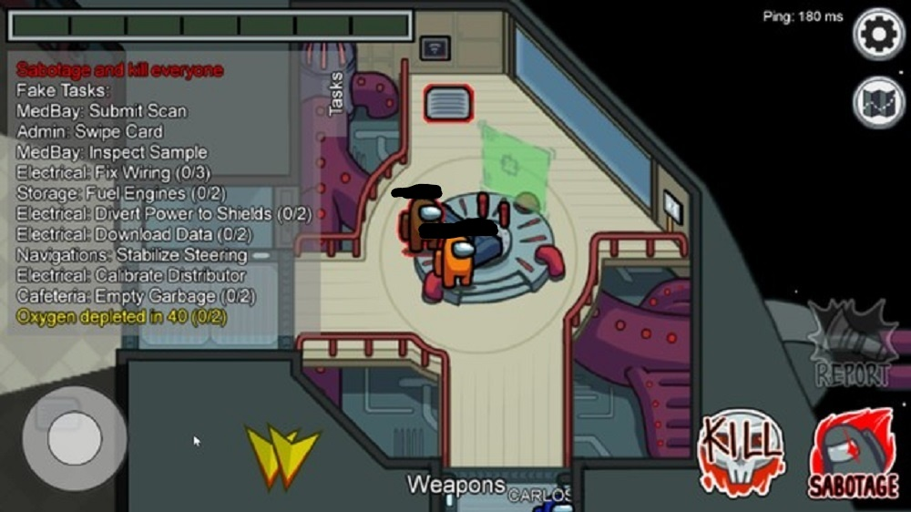- Task Bar: This bar keeps track of how many objectives have been completed by the Crewmates. Use this as a way to keep track of how the Crewmates are doing in relation to their tasks.
- Sabotage: As an Imposter, you are able to cause disruption around the map that can give you the advantage and some easy kills.
- Kill: As an Imposter, you are able to kill the other players within the game to disrupt their progression on tasks. Note: Everytime you kill a Crewmate, there will be a cooldown before you can kill another player. This is the fastest way to dwindle the Crewmates numbers to win the game.
- Fake Tasks: As an Imposter, you don't do tasks. Instead, you fake tasks. Use this to your advantage to trick other players to belive you are innocent and drive suspision off you when it comes to the voting process.
Your objective as an Imposter is to kill or vote off enough Crewmates until the number of Crewmates is the same as the number of imposters.
Sabotage (Imposter)
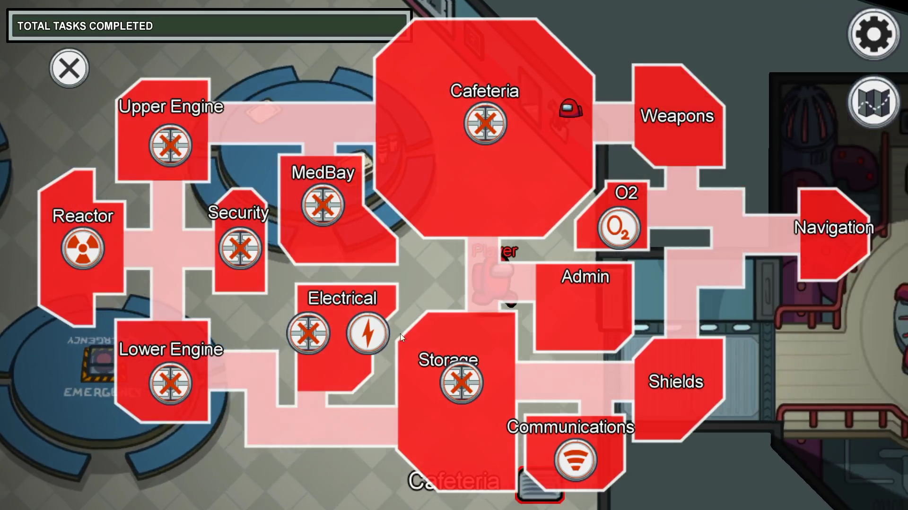As an Imposter, you can sabotage periodically to slow down the Crewmates and get easy kills. Let's explain Sabotage and Tips with Sabotage.
- Lights: When sabotaged, the vision radius of every Crewmate in the game will decrease until it's a minimum. Imposters vision will remain normal, so use this advantage to get a sneaky kill on a Crewmate that is making their way to electrical.
- Communications: When sabotaged, the Crewmates will have their objectives hidden from them until they fix the radio in the communications room. The greatest advantage is that the security cameras will also be disabled during this time, so use that to kill whoever is in security and leave the area quickly.
- Reactor: When sabotaged, Crewmates will have 30 seconds to stabilise the reactor. If the reactor isn't stabilised in that time, you will win. You can use this to kill Crewmates on their way to reactor or pause task progression for the Crewmates.
- O2 (Excluding Polus): When sabotaged, Crewmates have 30 seconds to restore the oxygen supply by inputting codes at two keypads. Use this time to either kill an unsuspecting Crewmate on their way to a keypad or stack with multiple crewmates on the same keypad and kill one. Although, the second way is very risky.
- Doors: As an Imposter, you can lock certain doors across the map that will keep Crewmates in that area of the map for around 30 seconds. Use this time to possibly hide bodies or kill when no one else is around.
Venting (Imposter Only)
As an Imposter, you have to be able to kill Crewmates quickly and swiftly. You are able to use the vents scattered around the map to quickly get around. Be cautious as Crewmates could catch you venting if you are not careful.
The vent locations and pathways have been highlighted for you.
The Skeld
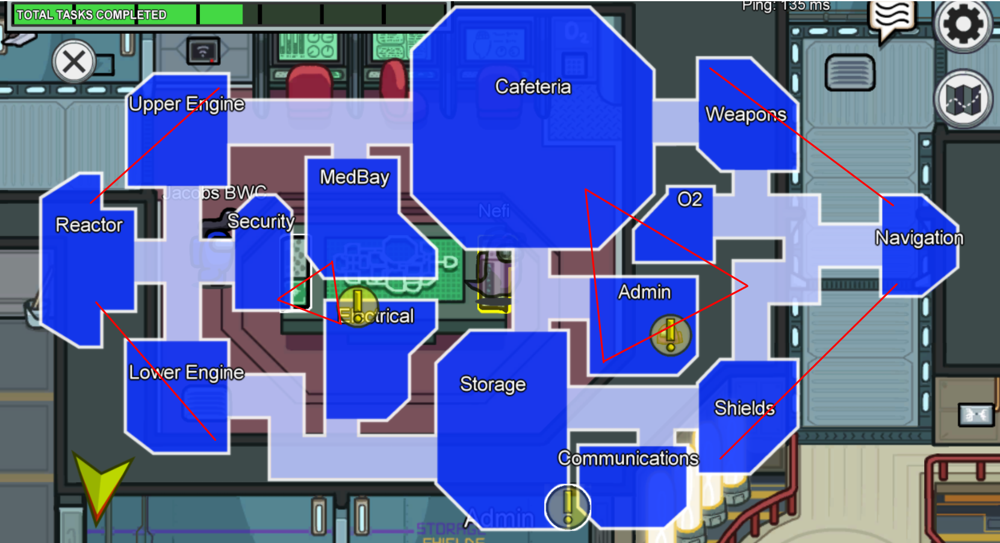Polus
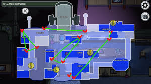Mira HQ

Note: The kill cooldown does not decrease when inside a vent.
The Voting Process (Imposter)
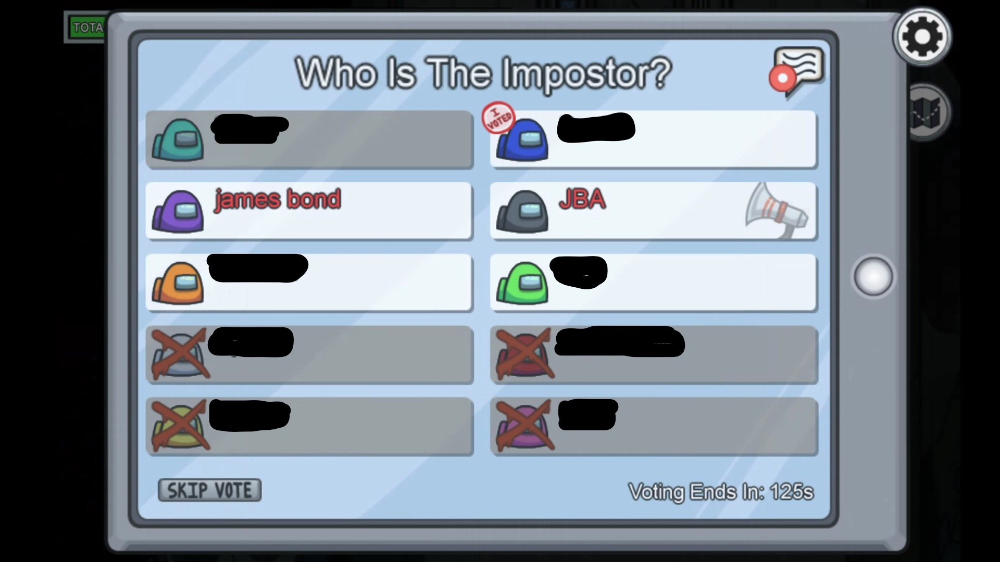One of your victims has been discovered. Your communication skills are important here: when the Crewmates find a body you've killed, they'll try to windle down as many possible suspects to pin you as the killer. Lie as best as possible, use fake alibis without getting caught if possible and throw blame on other players. However, if worse comes to worse vote off a fellow imposter if they get caught to avoid suspicion.
Playing as an Imposter (Ghost)
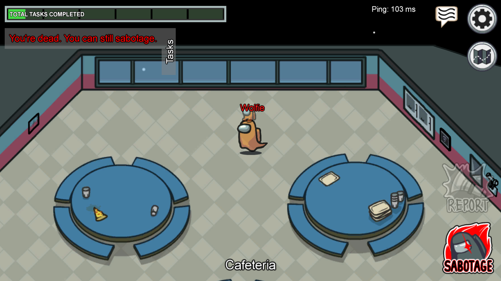 Not all hope is lost if you're ejected! You can still help your fellow Imposters win!
You can still sabotage while you're dead, but you must remain silent the entire time!
Imposter Victory Screen
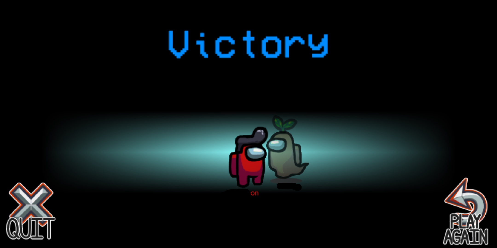If the Imposters manage to kill all Crewmates, eject enough Crewmates or successfully sabotage O2 or Reactor, the Imposters will win.
Imposter Lose Screen
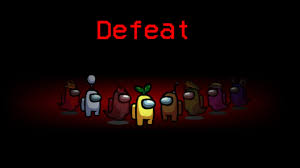If all of the Imposters are caught and voted off or if all Crewmates complete their tasks, the Imposters will lose.
Now that you've learned how to play as the Imposter, start heading into some lobbies and sharpen up those killer skills! Have fun!